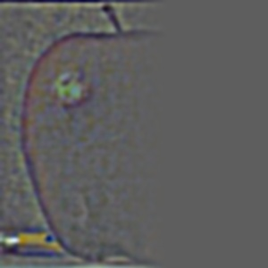

This project explores fundamental concepts in computer vision through filters and frequency-based techniques. In the first part, I implemented convolutions from scratch and applied finite difference and Gaussian filters to detect edges and compute image gradients. I also visualized gradient orientations in HSV space. In the second part, I experimented with applications such as sharpening images using unsharp masking, creating hybrid images that reveal different content depending on viewing distance, and performing multi-resolution blending with Gaussian and Laplacian stacks. These tasks highlighted how filters can isolate frequency components, enhance details, and blend images seamlessly, bridging mathematical operations with visually compelling results.
Part 1: Fun with Filters
Part 1.1: Convolutions from Scratch!
In this section, I implement four-loop and two-loop convolutions by hand. Both the four-loop and two-loop convolution implementations work by sliding a flipped kernel over the padded image and computing a dot product at each position. The difference lies in how this dot product is calculated:
The four-loop version uses two nested loops to explicitly multiply and sum values.
The two-loop version uses NumPy's elementwise multiplication along with np.sum().
To keep the convolution output the same size as the original image, zero-padding is applied. For an \(n \times n\) image with padding \(p\) and a \(k \times k\) kernel, the output shape is \( (n + 2p - k + 1) \times (n + 2p - k + 1) \). Setting \(p = (k - 1) // 2\) ensures the output shape is \(n \times n\). The zero padding is applied to the image using np.pad().
Although both implementations give the same results as scipy.signal.convolve2d(), they are much slower due to explicit looping and the lack of low-level optimizations. Specifically, the SciPy implementation runs the fastest followed by the two loop and then the four loop. Below are snippets of the convolution code, along with a headshot of myself and the same image convolved using a box filter and the two finite difference operators.
Four Loop CodeTwo Loop Code
Original ImageBox FilterDx OperatorDy Operator
Part 1.2: Finite Difference Operator
In this section, I work with the finite difference operators Dx and Dy. To get the partial derivative in terms of x and y, the images are convolved with the Dx and Dy operators resulting in the images below.
\[
D_x = \begin{bmatrix} 1 & 0 & -1 \end{bmatrix},
\quad
D_y = \begin{bmatrix} 1 \\ 0 \\ -1 \end{bmatrix}
\]
Partial Derivative in xPartial Derivative in y
Next, the gradient magnitude image is calculated as
To binarize the image, a threshold is applied: pixels above the threshold are set to maximum brightness, while those below are set to minimum brightness. The threshold was set to 0.2, noting that all pixel values have been normalized to the range \([0, 1]\). Looking at the binarized image, there is noticeable noise near the bottom. Increasing the threshold reduces this noise, but at the cost of losing useful edge information elsewhere. A better technique for preserving edges while suppressing noise will be introduced in the next section.
This overall process—computing partial derivatives, forming the gradient magnitude, and binarizing the result—will be referred to as the finite difference algorithm in later sections.
Gradient MagnitudeBinarized / Edge Image
Part 1.3: Derivative of Gaussian (DoG) Filter
I first attempt to improve the final binarized image by blurring the original image before feeding it into the finite difference algorithm. The 2D Gaussian filter is constructed using cv.getGaussianKernel(ksize, sigma) with an appropriate kernel size and sigma value. Since this function only returns a 1D vector, I take its outer product with itself to obtain a 2D Gaussian kernel. Empirically, I found that setting the kernel size to about five times the sigma captures all the meaningful information of the Gaussian while avoiding unnecessary computation from including too many near-zero values. Finally, I chose the threshold value to be 0.25 and the kernel size was set to 15 and the standard deviation \(\sigma\) to 3. Shown below are the 2D Gaussian filter, the smoothed image, and the result of applying the finite difference algorithm to the smoothed image.
Gaussian Kernel
Smoothed ImageSmoothed Binarized Image
Can this operation be done in fewer convolution steps? The answer is yes—well, sort of. A neat property of convolution is that it is commutative. This means that instead of first applying a Gaussian blurring filter and then the finite difference operators, I can precompute a Derivative of Gaussian (DoG) filter, which is simply the convolution of a Gaussian filter with a finite difference operator. Using this approach, when I run the finite difference algorithm, I replace the plain finite difference operators with the DoG filters, which already include smoothing. Shown below are the DoG filters and the final binarized image obtained from this modified finite difference operation. Notice that the result of smoothing beforehand and using the DoG filters is effectively the same! Compared to the previous section, these images are less noisy, with few or no specks at the bottom.
DoG x KernelDoG y Kernel
DoG Binarized Image
Bells & Whistles
For this section, the image gradient orientations were computed. I obtained the partial derivatives of the image in the x and y directions using the finite difference operators. I then calculated the gradient magnitude (as shown before) and the gradient orientation as
Next, I formed an image by constructing its HSV values. The hue was based on the gradient orientation, but since hue ranges from 0 to 1, I mapped the result of the arctangent function from \([-\pi, \pi]\) to \([0, 1]\). The saturation was set to 1 everywhere for a more vibrant image. Finally, the value channel of each pixel was set according to its gradient magnitude. Because gradient magnitude values can exceed 1, I normalized the entire matrix by dividing by its maximum, mapping values into the range \([0, 1]\). The HSV layers were then stacked using np.stack() and converted to an image with hsv_to_rgb(). The resulting image shows the gradient orientations with brightness set proportional to the gradient magnitude.
remington.jpgImage Gradient Orientation
Part 2: Fun with Frequencies!
Part 2.1: Image "Sharpening"
The sharpening technique was first applied to an image of the Taj Mahal. Sharpening (or blurring) a color image is done by applying the operation independently to each of its channels. For grayscale images, there is only one channel, but for RGB or BGR images there are three. The sharpening process involves two main steps. First, the low-frequency components are obtained by convolving the image with a Gaussian kernel (here, the kernel size was set to 15 and the standard deviation \(\sigma\) to 3). The high-frequency components are then computed by subtracting the low-frequency image from the original image. Finally, the sharpened image is formed as \( \text{sharpened_img} = \text{img} + \alpha \cdot \text{high_freq} \). Because both blurring and sharpening can push pixel values outside the range [0,1], the results are clipped to this range. Clipping was chosen over normalization in order to preserve the relative contrast of the image. Shown below is the original picture of the Taj Mahal as well as its low-frequency and high-frequency components.
Original TajLow-frequency TajHigh-frequency Taj
Now shown here is the sharpening operation applied to the Taj Mahal with different values for alpha. It can be seen that at higher values of alpha, the image gets more distorted and appears to be "deep fried".
Here I start with a regular image, blur it, and then attempt to resharpen it. The same kernels were used for both the blurring and sharpening operations, with a kernel size of 25 and a standard deviation \(\sigma = 5\). For sharpening, I set \(\alpha = 1\). In the next row are the low and high frequency elements of the original image.
Original HouseBlurred HouseSharpened Blurred House
Low-frequency HouseHigh-frequency House
Part 2.2: Hybrid Images
In this section, I implement hybrid images following the approach outlined in the SIGGRAPH 2006 paper by Oliva, Torralba, and Schyns. To begin, I aligned the images by selecting two corresponding points on each image. I then applied a low-pass filter to one image and a high-pass filter to the other, producing two filtered versions. Combining these by addition and clipping the result to the range \([0, 1]\) was found to give the best outcome for the hybrid images. For the Derek and Nutmeg hybrid, I used a kernel size of 75 with a standard deviation of \(\sigma = 15\). For Chris Evans and Rdj, I chose a kernel size of 45 with \(\sigma = 9\). For Koupenchan and Pompompurin, I used a smaller kernel size of 25 with \(\sigma = 5\). Below are the results of these hybrid image experiments.
DerekPicture.jpgnutmeg.jpgLow Frequencies of DerekHigh Frequencies of NutmegHybrid Image of Derek and Nutmeg
koupenchan.jpgpompompurin.pngLow Frequencies of KoupenchanHigh Frequencies of PompompurinHybrid Image of Koupenchan and Pompompurin
chris_evans.pngrdj.pngLow Frequencies of Chris EvansHigh Frequencies of RdjHybrid Image of Chris Evans and Rdj
In addition to creating hybrid images, I performed frequency analysis on the inputs. To do this, I first converted the images to integers, then to grayscale. I applied np.log(np.abs(np.fft.fftshift(np.fft.fft2(gray_image)))) to compute their 2D Fourier transforms. The raw Fourier output is grayscale and may fall outside the \([0, 1]\) range, so I normalized it before applying matplotlib.cm.viridis for visualization. Shown below are the 2D Fourier transforms of the images, along with intermediate results from constructing the hybrid of Chris Evans and Rdj.
Fourier of chris_evans.pngFourier of rdj.pngFourier of Low Frequencies of Chris EvansFourier of High Frequencies of RdjFourier of Hybrid Image
Part 2.3: Gaussian and Laplacian Stacks
In this part, I recreate the outcomes of Figure 3.42 in Szeliski (Ed. 2), page 167. The first step is to build a Gaussian stack. This begins with a list containing the original image, then repeatedly applying a Gaussian filter to the most recent image and appending the result. Since this is a stack (and not a pyramid), the images are not downsampled at each level. Instead, the effective blur increases with each iteration. I found that choosing \(\sigma = 2^i\), where \(i\) is the current iteration, worked well. For the rest of this assignment, I used a stack depth of \(N = 5\).
Next, I constructed a Laplacian stack. A Laplacian stack is obtained by subtracting successive elements of the Gaussian stack, or more formally:
\[
\begin{aligned}
\text{lap}[i] &= \text{gauss}[i] - \text{gauss}[i + 1], \quad i \in [0, N-1) \\
\text{lap}[N - 1] &= \text{gauss}[N - 1]
\end{aligned}
\]
The final Gaussian image is included in the Laplacian stack to allow reconstruction of the original image. With both Gaussian and Laplacian stacks prepared, the last component needed to reproduce the "oraple" figure is a mask. This mask determines how the Laplacian stacks of two images blend together. Instead of using a simple half-white, half-black mask (which can lead to harsh transitions), I created a smoother mask. It consists of a fully white region, a fully black region, and a middle gradient constructed using np.linspace() and np.tile(). This smoother transition produces much better blending results. The mask I used is shown below.
mask
With the mask and the Laplacian stacks of the apple and the orange, I now have everything needed to recreate the figure. Let \(LS_B\) denote the Laplacian stack of the blended image, \(LS_1\) and \(LS_2\) the Laplacian stacks of the two source images, and \(GS_M\) the Gaussian stack of the mask. A Gaussian stack of the mask is used (instead of reusing the same mask across levels) to ensure smooth transitions between Laplacian layers. The blended Laplacian stack is then computed as:
\[
LS_B[i] = LS_1[i] \cdot GS_M[i] + LS_2[i] \cdot (1 - GS_M[i])
\]
Finally, the blended image is reconstructed by summing all layers of its Laplacian stack. This reconstruction process works not only for blended stacks but for any Laplacian stack. The last row of this section shows the reconstructions from the masked Laplacian stacks of the two input images, as well as that of the blended "oraple" image. This technique produces the final blended image in the bottom-right and forms the foundation for the blending results shown in the next section.
Apple Lap Stack Level 0, \( LS_1[0] \cdot GS_M[0]\)Orange Lap Stack Level 0, \( LS_2[0] \cdot (1 - GS_M[0])\)Blended Lap Stack Level 0, \( LS_B[0]\)

Apple Lap Stack Level 2, \( LS_1[2] \cdot GS_M[2] \)Orange Lap Stack Level 2, \( LS_2[2] \cdot (1 - GS_M[2]) \)Blended Lap Stack Level 2, \( LS_B[2] \)
Apple Lap Stack Level 4, \( LS_1[4] \cdot GS_M[4] \)Orange Lap Stack Level 4, \( LS_2[4] \cdot (1 - GS_M[4]) \)Blended Lap Stack Level 4, \( LS_B[4] \)
Additionally, here are the gaussian and laplacian stacks of the apple and the orange from levels 0 to 4
Apple Gauss Stack Level 0Apple Lap Stack Level 0Orange Gauss Stack Level 0Orange Lap Stack Level 0
Apple Gauss Stack Level 1Apple Lap Stack Level 1Orange Gauss Stack Level 1Orange Lap Stack Level 1
Apple Gauss Stack Level 2Apple Lap Stack Level 2Orange Gauss Stack Level 2Orange Lap Stack Level 2
Apple Gauss Stack Level 3Apple Lap Stack Level 3Orange Gauss Stack Level 3Orange Lap Stack Level 3
Apple Gauss Stack Level 4Apple Lap Stack Level 4Orange Gauss Stack Level 4Orange Lap Stack Level 4
Part 2.4: Multiresolution Blending (a.k.a. the oraple!)
Shown below are blended pairs: an apple with an orange, Kirby with Snorlax, and a city at dusk with the same city at dawn. Each row displays the two original images, the mask used for blending, and the resulting blended image. For the apple–orange and city–dusk/dawn examples, I used gradient-style masks to achieve smooth transitions. For the Kirby–Snorlax example, I designed a custom mask to better match the shapes of the subjects.
apple.jpegorange.jpegApple and Orange MaskBlended Apple and Orange
kirby.jpgsnorlax.jpgKirby and Snorlax MaskBlended Kirby and Snorlax
dusk.jpgdawn.jpgDusk and Dawn MaskBlended Dusk and Dawn
Conclusion
This project demonstrated how fundamental image processing techniques—such as convolution, finite difference operators, Gaussian smoothing, and frequency-based filtering—can be applied to produce powerful and visually compelling results. From sharpening and hybrid images to multi-resolution blending with Laplacian stacks, I explored how manipulating different frequency components enables both enhancement and seamless transitions in images. Overall, this work highlighted the close connection between mathematical concepts and their practical applications in computer vision.